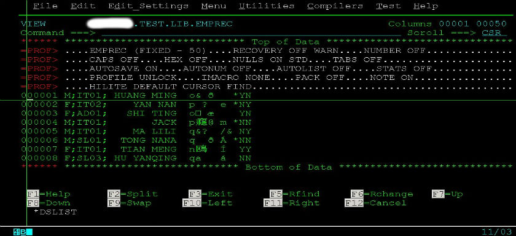
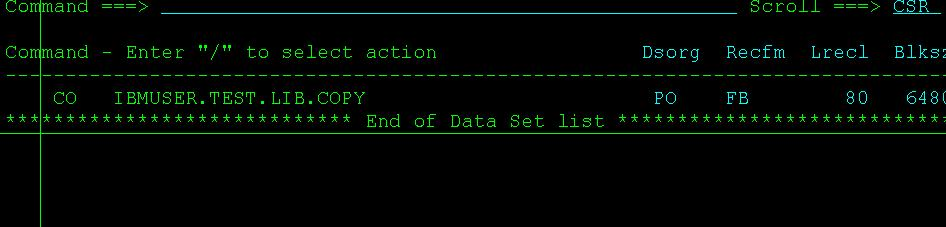
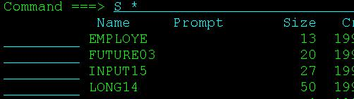

介绍几个有用的ISPF命令(续二)
2011-04-24
M+F7 和 M+F8
命令行上输M,接着按F7, 表示回到文件最顶端
命令行上输M,接着按F8, 表示回到文件最低端
COL
显示列号，这个命令特别是在对齐的时候很有用。因为在JCl语法中，很多关键字必须规定从第几列开始写，不然会出错的，比如JCLLIB ORDER一定要从第四列开始写，所以用COL命令显示行号是很有必要的。
HI
语法高亮用HI，比如可以用HI PLI来高亮PL/I代码，用HI COBOl高亮COBOl代码，用HI JCL来高亮JCL语法，用HI REXX来高亮REXX语法，用HI ASM来高亮汇编代码，一共支持18种语言。可以HI直接回车来查看和选择支持高亮的语言种类。当然，很多时候，我们直接用HI ON或者HI AUTO来让系统自动选择语法高亮的语言。
RETP
在3.4里输入命令RETP就能查询得到你最近使用的十多个命令。
REFLIST
在3.4的菜单栏上有个REFLIST的选项，里面可以列出你最近访问的30个DATASET
SORT
在PDS里面，可以用SORT来对所有的MEMBER排序。可以配合参数来满足你的要求，比如：
SORT CHANGED A: 按修改时间升序排列
SORT ID A: 按ID升序排列
SORT SIZE D: 按SIZE降序排列
SORT CREATE A: 按创建时间升序排列
PROFILE
在你编辑某个DATASET的时候用命令PROFILE可以显示出所有当前的设置参数，然后你可以自行根据需要针对性的修改。如下图所示：

CO和S *
用来一次性拷贝PDS下面所有的member。在你要拷贝的PDS面前输入CO，回车。这里，我们要拷贝IBMUSER.TEST.LIB.COPY下面所有的member

接着输入S *回车即可让你拷贝该PDS下面所有的member，当然，你也可以不拷贝所有的，而是有选择的拷贝。

好了，命令就介绍到这里，以后再补充。
Category: Mainframe Tagged: ISPF